SW Chapter 6
Spring 2026
Central Question
How do we estimate the effect of \(X_1\) on \(Y\) while holding other factors constant?
By the end of this chapter, you will:
Recall our wage equation from Chapter 4:
\[ wage_i = \beta_0 + \beta_1 \cdot education_i + u_i \]
Problem: What’s in \(u_i\)?
If any of these are correlated with education, then \(\hat{\beta}_1\) suffers from omitted variable bias!
\[ wage_i = \beta_0 + \beta_1 \cdot education_i + \beta_2 \cdot experience_i + u_i \]
Multiple Linear Regression Model
\[ Y_i = \beta_0 + \beta_1 X_{1i} + \beta_2 X_{2i} + \cdots + \beta_k X_{ki} + u_i \]
where:
Same principle as simple regression: Minimize sum of squared residuals
\[ \min_{\hat{\beta}_0, \hat{\beta}_1, \ldots, \hat{\beta}_k} \sum_{i=1}^n \hat{u}_i^2 \]
where
\[ \hat{u}_i = Y_i - \hat{\beta}_0 - \hat{\beta}_1 X_{1i} - \cdots - \hat{\beta}_k X_{ki} \]
In practice: We use statistical software (Stata, R, Python) to compute \(\hat{\beta}_0, \ldots, \hat{\beta}_k\)
Partial Effect
\(\beta_j\) is the partial effect of \(X_j\) on \(Y\), holding all other regressors constant.
Mathematically:
\[ \beta_j = \frac{\partial Y}{\partial X_j} = \frac{\Delta Y}{\Delta X_j} \bigg|_{\text{other } X\text{s fixed}} \]
In words:
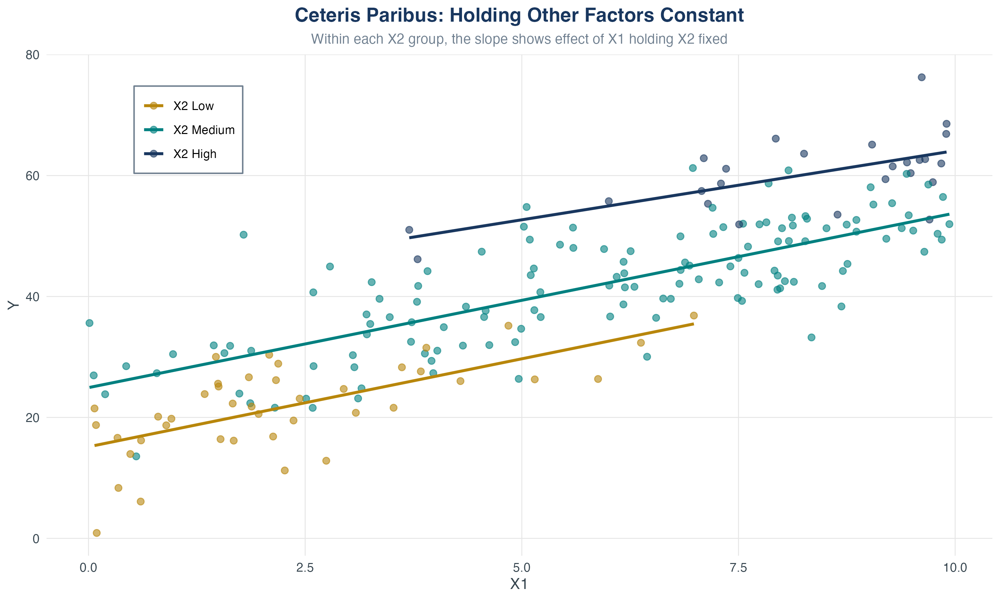
Within each \(X_2\) group, the slope shows the effect of \(X_1\) holding \(X_2\) fixed.
Estimated model:
wage = 5.2 + 2.1*education + 0.6*experienceInterpretation of \(\hat{\beta}_1 = 2.1\):
Interpretation of \(\hat{\beta}_2 = 0.6\):
Question
You estimate: \(colGPA = 1.3 + 0.45 \cdot hsGPA + 0.009 \cdot ACT\)
Compare two students:
What is the predicted difference in their college GPAs?
Answer
Difference = \(0.45 \times (4.0 - 3.5) = 0.45 \times 0.5 = 0.225\)
Student B is predicted to have a college GPA 0.225 points higher, holding ACT constant.
Let’s look at the relationship between high school and college GPA, controlling for test scores (MSU students in Fall 1994).
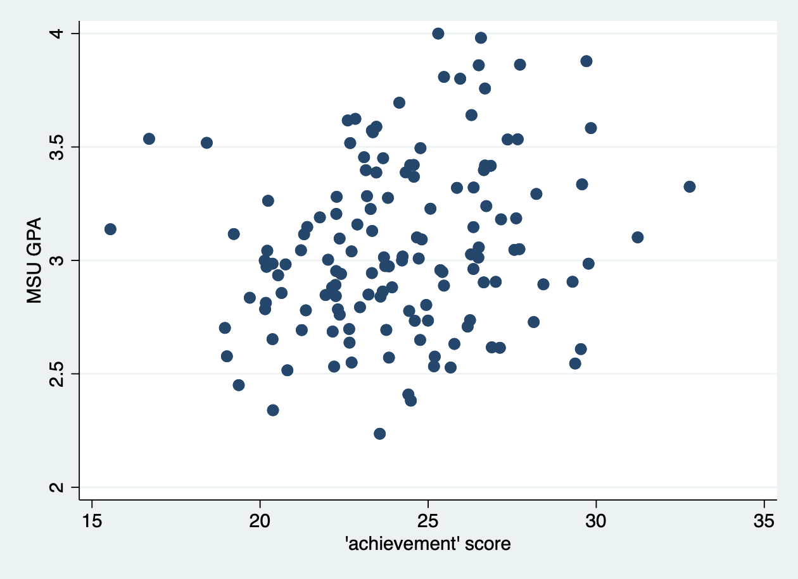
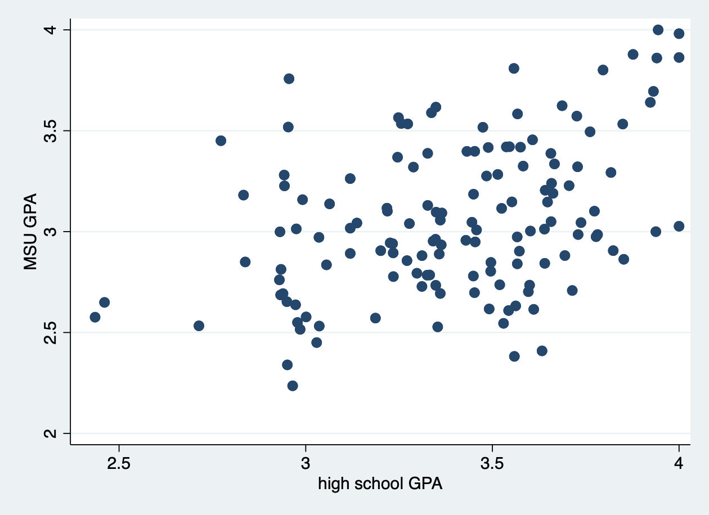
What predicts college GPA?
We can set up the following population multiple regression model
\[ colGPA_i = \beta_0 + \beta_1 hsGPA_i + \beta_2 ACT_i + u_i \]
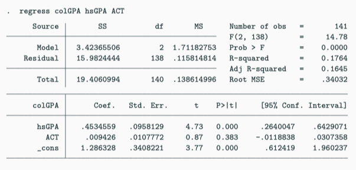
Stata regression output for college GPA
Estimated equation (or OLS regression line):
\[ \widehat{colGPA} = 1.29 + 0.453 \cdot hsGPA + 0.0094 \cdot ACT \]
Interpretation:
Let’s work through some theory! True population model:
\[ Y_i = \beta_0 + \beta_1 X_{1i} + \beta_2 X_{2i} + u_i \]
Both \(X_1\) and \(X_2\) belong in the model.
But we estimate (omitting \(X_2\)):
\[ Y_i = \tilde{\beta}_0 + \tilde{\beta}_1 X_{1i} + \tilde{u}_i \]
Question
Is \(\tilde{\beta}_1\) an unbiased estimator of \(\beta_1\)?
Assume \(X_2\) is linearly related to \(X_1\):
\[ X_{2i} = \delta_0 + \delta_1 X_{1i} + v_i \]
Substitute into the true model:
Step 1: Start with the true model:
\[ Y_i = \beta_0 + \beta_1 X_{1i} + \color{#008080}{\beta_2 X_{2i}} + u_i \]
Step 2: Replace \(X_{2i}\) with its relationship to \(X_1\):
\[ Y_i = \beta_0 + \beta_1 X_{1i} + \color{#008080}{\beta_2}(\delta_0 + \delta_1 X_{1i} + v_i) + u_i \]
Step 3: Distribute \(\color{#008080}{\beta_2}\):
\[ Y_i = \beta_0 + \beta_1 X_{1i} + \color{#008080}{\beta_2}\delta_0 + \color{#008080}{\beta_2}\delta_1 X_{1i} + \color{#008080}{\beta_2}v_i + u_i \]
Step 4: Collect like terms:
\[ \begin{aligned} Y_i &= (\beta_0 + \color{#008080}{\beta_2}\delta_0) + (\beta_1 + \color{#008080}{\beta_2}\delta_1) X_{1i} + (\color{#008080}{\beta_2}v_i + u_i) \end{aligned} \]
Omitted Variable Bias Formula
\[ E[\tilde{\beta}_1] = \beta_1 + \beta_2 \delta_1 \]
where \(\beta_2\delta_1\) is the bias.
\[ \text{Bias} = \beta_2 \delta_1 \]
Bias is ZERO if:
Bias is NON-ZERO when:
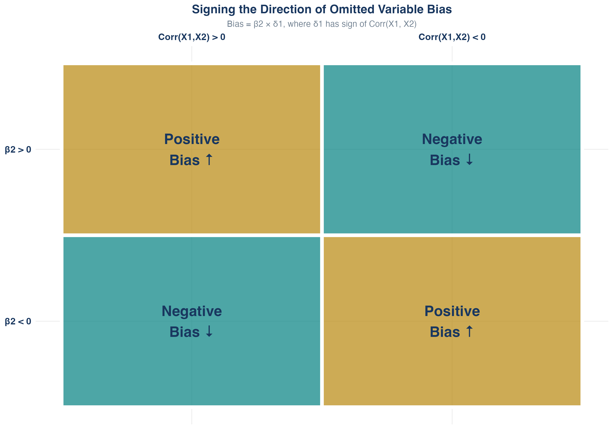
Sign of bias depends on: (1) sign of \(\beta_2\) and (2) sign of \(\text{Corr}(X_1, X_2)\). Example: Education/Ability: \(\beta_2 > 0\) and \(\text{Corr}(education, ability) > 0\) \(\Rightarrow\) positive bias
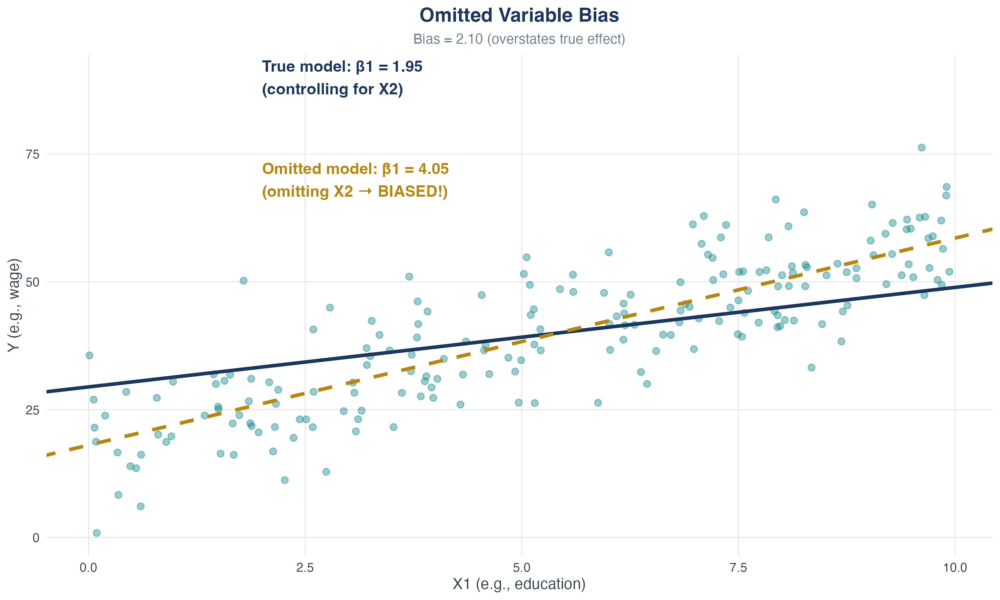
OVB: true vs omitted regression
True model:
\[ wage = \beta_0 + \beta_1 \cdot educ + \color{#008080}{\beta_2 \cdot abil} + u \]
But ability is unobserved!
Relationship between ability and education:
\[ \color{#008080}{abil} = \color{#008080}{\delta_0 + \delta_1 \cdot educ + v} \]
Substitute into the true model:
\[ \begin{aligned} wage &= \beta_0 + \beta_1 \cdot educ + \color{#008080}{\beta_2}(\color{#008080}{\delta_0 + \delta_1 \cdot educ + v}) + u \\ &= (\beta_0 + \color{#008080}{\beta_2\delta_0}) + (\beta_1 + \color{#008080}{\beta_2\delta_1}) \cdot educ + (\color{#008080}{\beta_2v} + u) \end{aligned} \]
What’s the bias?
It will look as if people with many years of education earn very high wages, but this is partly due to the fact that people with more education are also more able on average.
Question
You’re studying the effect of police officers (\(X_1\)) on crime (\(Y\)).
True model: \(crime = \beta_0 + \beta_1 \cdot police + \beta_2 \cdot poverty + u\)
You omit poverty. What’s the likely direction of bias on \(\hat{\beta}_1\)?
. . .
Hints:
. . .
Answer
. . .
. . .
. . .
Omitting poverty makes it look like police cause crime (reverse causality illusion)!
We can extend this intuition when we add more independent variables:
\[ y = \beta_0 + \beta_1 x_1 + \beta_2 x_2 + \beta_3 x_3 + u \]
But we estimate:
\[ \widetilde{y} = \widetilde{\beta_0} + \widetilde{\beta_1} x_1 + \widetilde{\beta_2} x_2 \]
Key points:
Same definition as simple regression:
\[ R^2 = \frac{ESS}{TSS} = 1 - \frac{SSR}{TSS} \]
Problem: \(R^2\) never decreases when you add regressors!
This makes \(R^2\) useless for comparing models with different numbers of regressors.
Adjusted R²
\[ \bar{R}^2 = 1 - \frac{n-1}{n-k-1} \cdot \frac{SSR}{TSS} \]
where \(k\) is the number of regressors (not including intercept).
Key property: \(\bar{R}^2\) penalizes you for adding regressors
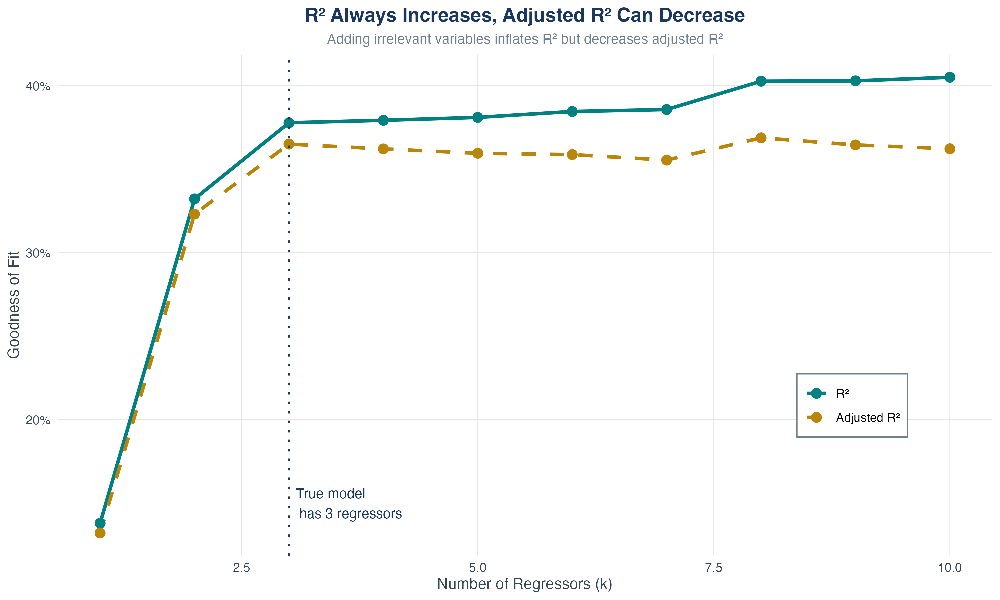
R² always increases with \(k\); adjusted R² can decrease
Question
You estimate a model with \(n = 100\) observations and \(k = 3\) regressors.
You obtain: \(SSR = 200\) and \(TSS = 500\)
Calculate the adjusted \(R^2\).
Answer
\(\bar{R}^2 = 0.5875\)
Note: \(R^2 = 0.6\), so \(\bar{R}^2 < R^2\) as expected.
Given: \(n = 100\), \(k = 3\), \(SSR = 200\), \(TSS = 500\)
Step 1: Write the formula:
\[ \bar{R}^2 = 1 - \frac{n-1}{n-k-1} \cdot \frac{SSR}{TSS} \]
Step 2: Plug in the values:
\[ \bar{R}^2 = 1 - \frac{100-1}{100-3-1} \cdot \frac{200}{500} \]
Step 3: Simplify:
\[ \bar{R}^2 = 1 - \frac{99}{96} \cdot \frac{200}{500} \]
Step 4: Calculate:
\[ \bar{R}^2 = 1 - 1.03125 \times 0.4 \]
\[ = 1 - 0.4125 = 0.5875 \]
Check: \(R^2 = 1 - \frac{200}{500} = 0.6\), so \(\bar{R}^2 < R^2\) as expected.
Model 1:
regress wage education experience
R² = 0.35, Adjusted R² = 0.34Model 2 (adding zodiac sign):
regress wage education experience zodiac_sign
R² = 0.351, Adjusted R² = 0.339Conclusion:
We add one more assumption as we upgrade to the multiple regression model
Zero conditional mean: \(E[u_i | X_{1i}, \ldots, X_{ki}] = 0\)
i.i.d. sampling: \((X_{1i}, \ldots, X_{ki}, Y_i)\) are independently and identically distributed
Large outliers rare: \(X\)s and \(Y\) have finite fourth moments
\[ E[u_i | X_{1i}, \ldots, X_{ki}] = 0 \]
Same interpretation as before, but now:
Assumption 2 (\(X\)s and \(Y\) are i.i.d.):
Assumption 3: Large outliers are rare:
Perfect Multicollinearity
One regressor is an exact linear function of one or more other regressors.
Examples:
What happens? OLS cannot be computed (infinite solutions)
What Stata does: Automatically drops one of the collinear variables (but which one will it be?)
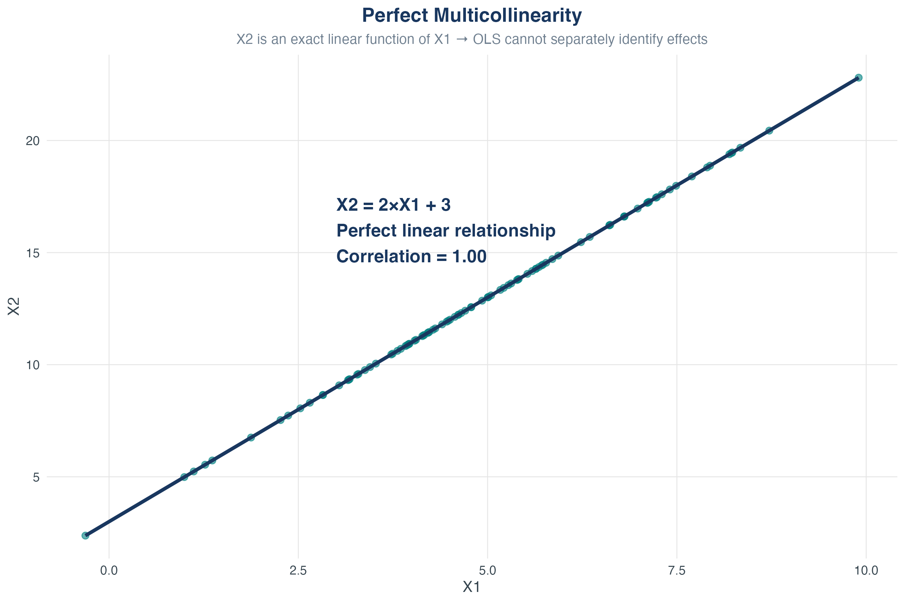
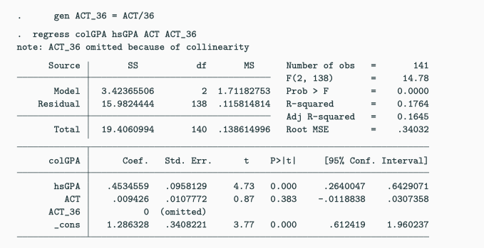
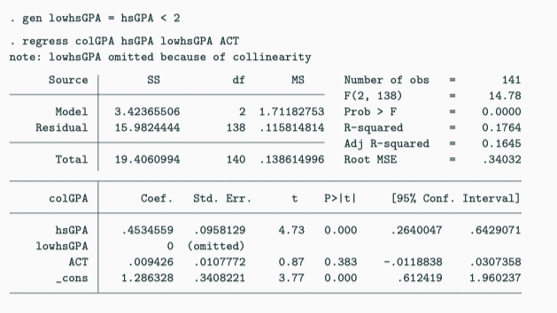
Here we have a dummy variable trap:
\[ colGPA = \beta_0 + \beta_1 fresh + \beta_2 soph + \beta_3 junior \\ \qquad\quad +\ \beta_4 senior + \beta_5 hsGPA + u \]
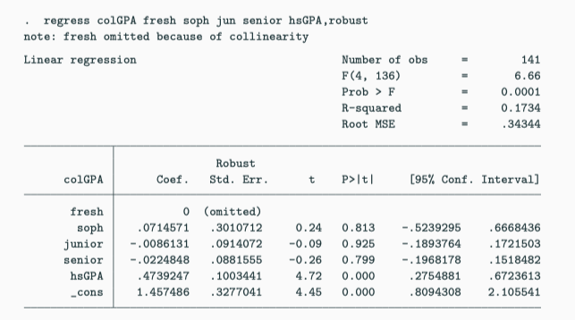
Imperfect Multicollinearity
Two or more regressors are highly (but not perfectly) correlated.
Example: Including education AND test scores
Intuition:
Consequence: Large standard errors for \(\hat{\beta}_1\) and \(\hat{\beta}_2\)
Key Point
Imperfect multicollinearity is not a violation of OLS assumptions. It’s a data problem, not a method problem.
Solutions:
What NOT to do: Ignore it or claim the model is “broken”
Multiple regression:
Output interpretation:
Check correlations:
| Concept | Formula |
|---|---|
| Multiple regression | \(Y = \beta_0 + \beta_1 X_1 + \cdots + \beta_k X_k + u\) |
| Partial effect | \(\beta_j = \frac{\partial Y}{\partial X_j}\) (other \(X\)s fixed) |
| OVB formula | \(E[\tilde{\beta}_1] = \beta_1 + \beta_2 \delta_1\) |
| Adjusted \(R^2\) | \(\bar{R}^2 = 1 - \frac{n-1}{n-k-1} \frac{SSR}{TSS}\) |
What we’ve learned:
Next chapter: Nonlinear Relationships
ECON3500 | Chapter 6